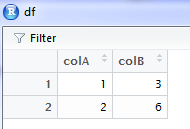

Working with the RStudio IDE
Foreword
- Output options: the ‘tango’ syntax and the ‘readable’ theme.
- Snippets and results.
Help: Alt+Shift+K or Tools/Keyboard Shortcuts Help.
Orientation¶
Commands
- Ctrl+Up; command history.
- Tab; completion for all.
- Ctrl+L; clear the console.
- Tools/Global Options… set up RStudio.
view(dataframe); open a spreadsheet, show in new window, sort the
rows, search, filter the rows.
df <- data.frame(colA = c(1, 2), colB = c(3, 6))
df
1 2 3 | |
View(df) # in a new window

IDE panes
- Environment pane; load, save, remove objects, read a dataset,
import dataset. - History pane; idem, clear all or one item at the time, copy the
command in the console pane, reload a command with Shift+Enter and
run it. - File pane; working directories, files, add a new folder, rename
getwd(); get working directory.setwd(); set working directory.- Plot pane; save (extension, size, resolution).
- Package pane; update.
- Help pane; pages.
- Viewer pane; more than plots!
Programming¶
Scripting
- Ctrl+Shift+M;
%>%. - Alt+-;
<-. - Ctrl+Shift+C; add/delete a
#for commenting.
%>%
<-
# comment
Code
-
Ctrl+Alt+I; new chunk.
-
Convert into a function.
- Type code,
- Highlight it,
- Code/Extract Function to create a function:
This:
rnorm(10, 0, 1)
Becomes:
rnorm <- function() {
rnorm(10, 0, 1)
}
- Ctrl+Alt+click; multiple cursors for typing!
- Switch between Default, Vim and Emacs modes with
Tools/Global Options/Code/Keybindings. - Shift+Alt+G; go to line.
- Ctrl+F: find/replace in the current document.
- Alt+O, Alt+Shift+O; fold/unfold the code.
- Ctrl+P; jump between symbols like (), {}, [].
- Ctrl+Shift+Enter; run and source the code.
- Ctrl+Enter; run and source the code.
- Ctrl+Shift+F10; restart, refresh the R session.
Error handling
RStudio traces back the error origin.
Toggle the show/hide traceback in the console when there is an error or
rerun with the bug, watch the right pane for traceback.
Investigate, highlight the next line of code, click in the traceback
window, click the dropdown menu in the Global Environment (upper-right).
Stop, continue in the debugger mode, press C, press Q.
Add/remove breakpoints, where the line numbers are.
debugonce; automatically call the debugger when the function is
called, but only once.debug,undebug; automatically call the debugger when the
function is called.
Add options(error=browser) or options(error=NULL) at the beginning
of the script; R automatically open the debugger mode.
- N; next line.
- step-into icon.
- Shift+F4; step into.
- Shift+F6; execute the remainder of the bug.
Project¶
- Create a project with a folder and all the files (Global
Environment, History, etc.): New Directory, Existing Directory,
Version Control… Empty Project, R Package (project), Shiny
Web Application. - Create a Git repository with the new project
Commands
- Ctrl+Shift+F; find in files.
- Ctrl+F9, F10; go backwards/forwards.
Packrat
Packrat is a dependency management system for R. Use one version of a
package for one project, another version of a package for another
project. Associate a project with its own set of packages.
- Packrat.
- Activate Packrat when creating a project or
Tools/Project Options/Packrat. - The library is virtually separate from R library.
- Perfect for collaborating with GitHub
Packages¶
Introduction to R packages
Anything that can be automated, should be automated. Do as little as
possible by hand. Do as much as possible with functions.
Process:
- Writing R functions.
- Documenting functions.
- Writing tests.
- Checking compatibility.
- Building the package for sharing and using.
See the book: R Packages.
Create a new R package
Create a new directory with new files, folders, and meta-information.
To update or not to update
RStudio generates the NAMESPACE content for you automatically.
See the book: R Packages.
Import & load source files
Move existing functions from an existing project into the new package.
The function are moves to a new folder in the project.
Test created functions all in once with the Load All command in the
Build Tab.
Simulations:
- Ctrl+Shift+L
- Ctrl+Shift+F10; restart a R session.
Packages documentation
Create a help page (.Rd file). Written in HTML.
Use the roxigen package to document.
Tools/Project Optons/Build Tools/Generate documentation. Generate the
doc, add comments.
First, create a doc skeleton above the function:
- Ctrl+Alt+Shift+R
#' Title
#'
#' @param x
#'
#' @return
#' @export
#'
#' @examples
cEnter <- function(x) {
x - mean(x)
}
Fill in the blanks.
Package documentation (2)
Title of the help page. Text on how to use.
The 4 tags (@) help organizing the doc: @export (tells R that this
function should be made available to people who load your package. ),
@params, @return, and @examples. There are many more advanced
tags.
Highlight a section and test it, run it.
Package documentation (3)
Build Tab/build the package.
- Ctrl+Shift+D
Compile all. Load all. Open the help page with ?function.
Learn the roxigen workflow to ease the work.
Test your package
With the testthat (and devtools) package.
Install both packages. Run devtools::use_testthat() and a now
directory with subdir appears in the package. This is where we save
tests.
Test your package (2)
Ready. Write tests. Open a new R script and save it to the tests
directory. Create a context function. Add test_that functions with
arguments.
context("cEnter")
test_that("cEnter handles integers", {
expect_equal(cEnter(1:3), -1:1)
expect_equal(cEnter(-(1:3)), 1:-1)
})
context("scale")
test_that("scale handles integers", {
expect_equal(scale(1:3), 1:3)
expect_equal(scale(-(1:3)), -(1:3))
})
context("standardize")
test_that("standardize handles integers", {
expect_equal(standardize(1:3), -1:1)
expect_equal(standardize(-(1:3)), 1:-1)
})
Test your package (3)
Run the tests.
- Ctrl+Shift+T
Get a summary (pass or not pass). Test and retest the package.
See the book: R Packages.
Time to test your package
Run the test with Build Tab/Test package.
Check your package
Upload the package to GitHub. Recreate the package structure in the
repo. Download and install the package with install_github() from the
devtools package. Test the package on GitHub to complete the tests.
Type R CMD check in the terminal. Or Build Tab/Check icon.
- Ctrl+Shift+E
Build your package
A package is a tarball or package bundle.
Build Tab/Build & Reload. Install and load the package.
- Ctrl+Shift+B
Build and reload will overwrite the existing package. Run
devtools::dev_mode() creates a separate library for development.
Running the command again cancels it.
Two formats: source package or binary package (more compresses and
optimized).
See the book: R Packages.
Wrap-up
Get the cheat sheet
Version Control¶
Introduction to Git
Use Git to work in team. Even on R scripts, reports and packages.
Install Git.
In RStudio, Tools/Global Options/Git/SVN + Tools/Project Options/Select
VCS, restart RStudio. RStudio has now a Git pane and a Git icon.
Stage & commit
The Git Tab is a directory. The real life (local) version of the
project. The official version of the project as recorded with Git.
The two versions are different. View the differences. When you commit,
you add thing from the real to the official version.
Green highlighting indicates something you’ve added to the official
version, while red highlighting indicates lines you have removed.
.gitignore
Inside the project, ther is a .gignore file. Add file that are excluded
from the offcial version. The file can be accessed from the Git pane.
Git icons
Add, (cancel), commit, (cancel). The icons will changed.
Commit history
History viewer: each commitment. HEAD commit and parent commit. Master
branch or another.
Undo commited changes: checkout
Checkout command. Go back to a previous commit. The commit stays in the
history (not deleted).
Run it in the shell: Tools/shell.
git checkout sha# nameofthefile and Git will reverse the commit. The
file is in the stage area as before the commit.
Undo uncommited changes
The file is in the stage area, ready to commit. Cancel the addition.
In the Change window, click on the Revert button.
Or, click on Discard chunk.
Or, Ctrl+Z to undo.
Then, Save the file.
Introduction to GitHub
Centralize, host, track issues, track metrics.
Install a R package From GitHub with install_github from the the
devtools packages.
Pull & Push
Local and GitHub
Wrap-up
Go to help.github.com
Go to stackoverflow.com
Reporting¶
Tools for reporting
R Markdown and Shiny (over the web).
Introduction to R Markdown
Text and code.
Web link: <http://www>
R Markdown in RStudio
Report (HTML, PDF, Word) or presentation(slide).
Create a template. Load in new templates. The rticles package has
templates for academic journals.
The outline (name the chunks).
Help/Markdown Quick Reference
Add a code chunk wih Ctrl+Alt+I
Rendering R Markdown
Knit or preview. For pdf, need \LaTeX (install).
Adding runtime: shiny generates a Shiny report. Launch the interactive
app.
Publish reports online.
Compile notebook
File/Compile Notebook for R script. The script becomes a report (Word,
PDF, HTML).
RStudio’s \LaTeX editor
Open a .tex file in RStudio. RStudio has limited options to edit \LaTeX;
enough to write and compile.
The preview window is linked to the source window. If we click on a
character in the source window, press Ctrl+click: the corresponding
character is highlighted in the preview window. Vice-versa.
Tools/Global options/Sweave to change the \LaTeX options.
Shiny
The server is online.
shiny.rstudio.com
When we create a Shiny app, we create two files: ui.R and server.R
Run App (the app) or Ctrl+Shift+Enter
Publish Shiny apps
Need an account and the shinyapps package.
devtools::install_github("rstudio/shinyapps")
Deploy the local app online. Unique URL. Monitor usage, view logs,
archive or delete the app. Max 5 apps at a time for free. Paid account.